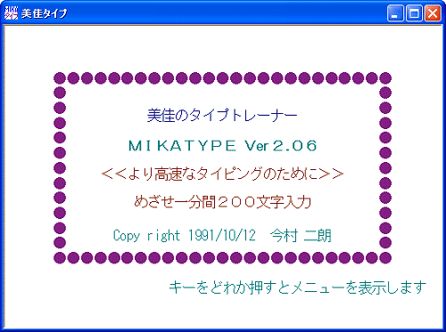
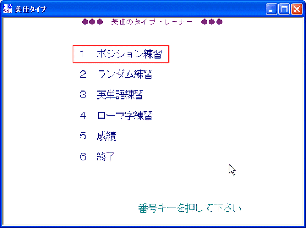
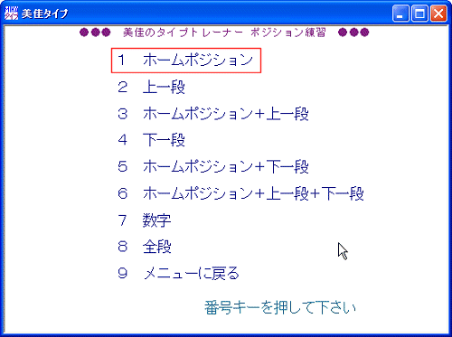
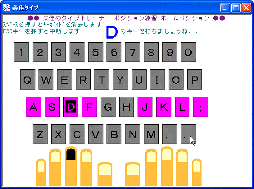

|
 最初の画面で，Enter キーをタイプする 最初の画面で，Enter キーをタイプする

 １ ポジション練習 をタイプする １ ポジション練習 をタイプする

 さらに，１ ホームポジション をタイプする さらに，１ ホームポジション をタイプする
このほか，２から６まで練習をします．７，８は省略して構いません．

 ポジション練習画面が開くので練習をはじめる ポジション練習画面が開くので練習をはじめる
 キーボードを絶対に見てはいけません． キーボードを絶対に見てはいけません．
ひとつのキーをタイプしたら，次のキーをタイプする前に
全ての指をホームポジションに一度戻します
この練習でキーの位置を覚えたら，ランダム練習に移ります．

|
|
 ポジション練習
ポジション練習
 ランダム練習
ランダム練習
 日本語の練習
日本語の練習
 終了方法
終了方法